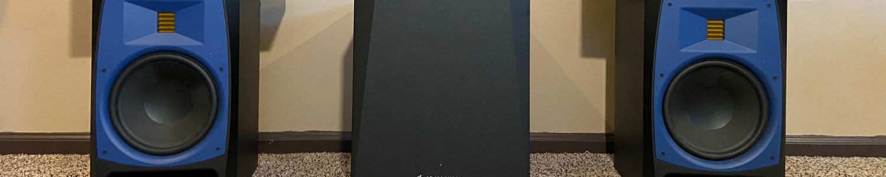

Composition, arrangement, recording, & production of original music in any style
Trumpet and Keyboards
Audio editing & video post-production
Live sound and production
Lansdale, Pennsylvania
Berklee College of Music
About
Josh is a musician of many influences and interests. Starting on piano, then picking up the trumpet, he is able to traverse and combine a wide array of styles. His compositions and arrangements are heavily influenced by classic funk, rock, and jazz icons, as well as jam bands like Grateful Dead and Phish. Despite these deeply rooted influences, Josh stays up to date with contemporary music and is able to compose or arrange in any style for any application.

Videos
Music
Production Of Original Music In Any Genre
A few examples of Josh's work
Orchestral Composition
Original Orchestral Pieces
-
Desire of Stone Finder
-
Sunrise After The Fight For The Stone
Acoustic Pop
'Be' - Written by Josh Faia
'Another Minute or Two' - Written by Giosaia S. Perillo
-
Be
-
Another Minute or Two
Drum and Bass
'Couch Surfer' - Written by Josh Faia
-
Couch Surfer
Cube
Spearheaded by Josh, Cube is a modern jam band collective that featuresoriginal music influenced by Psychedelic Rock, Funk, and Disco.
